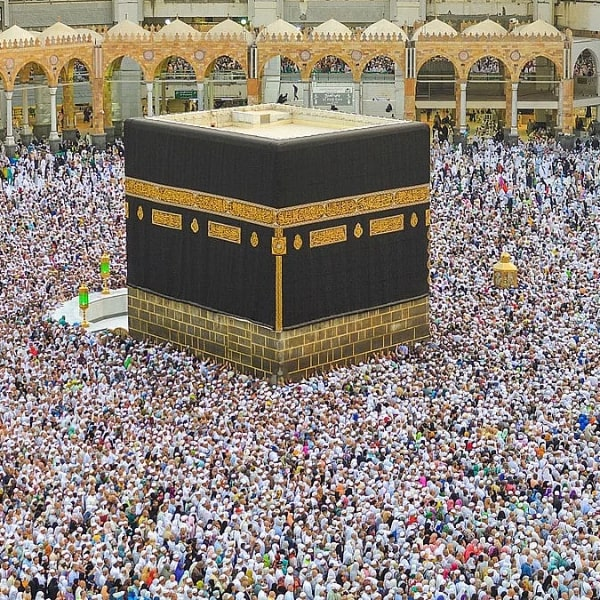
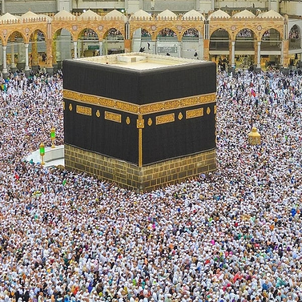
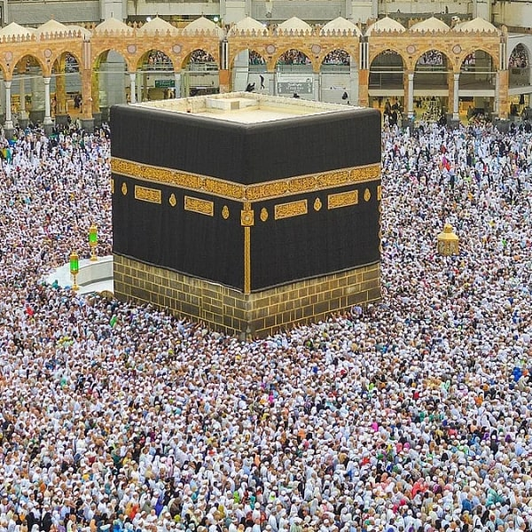

The Five Pillars of
ISLAM
The Five Pillars of Islam are the foundation of Muslim life and faith. They include:
- Shahada (declaration of faith)
- Salat (prayer)
- Zakat (almsgiving)
- Sawm (fasting)
- Hajj

The Five Pillars of Islam are the foundation of Muslim life and faith. They include:
The scholars are the inheritors of the Prophets. They do not leave behind gold or silver coins, but rather they leave behind knowledge.


The Quran is a source of knowledge that provides guidance for all aspects of life. It contains divine wisdom that is relevant to every era and every society, and offers a roadmap for leading a meaningful and fulfilling life. The Quran teaches us about the nature of God and the universe, as well as the purpose of our existence. It provides moral guidance and ethical principles that are essential for human survival and flourishing. Ultimately, the Quran is not just a book, but a way of life that offers a path to salvation and success in this world and the hereafter..